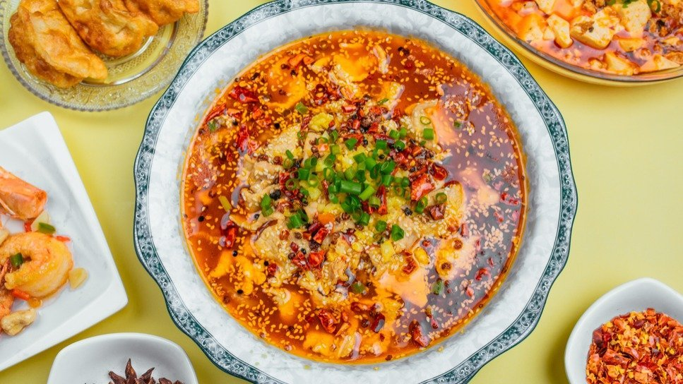
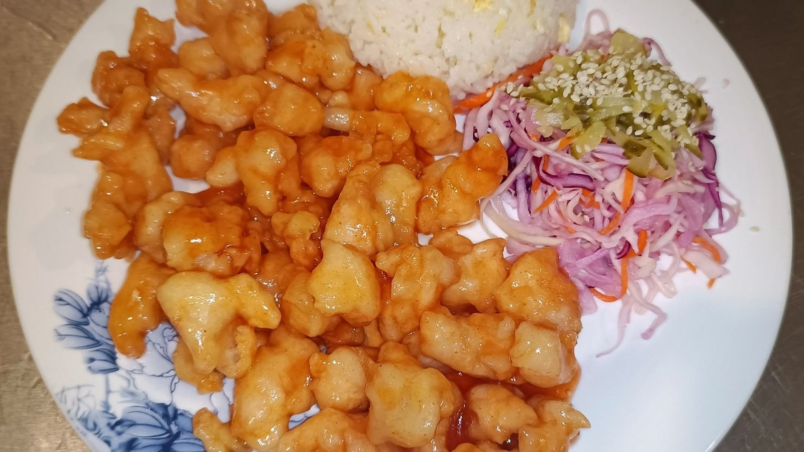
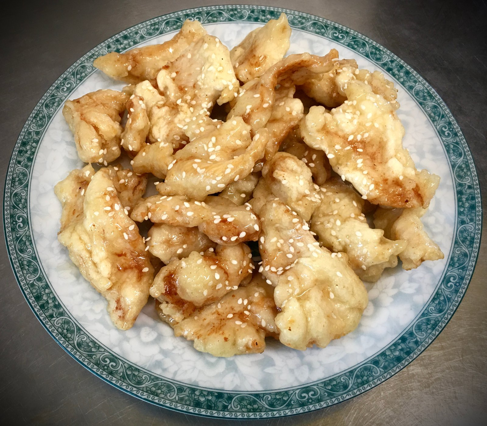
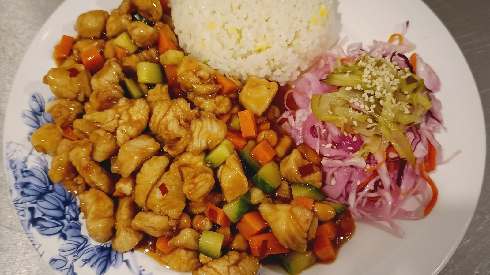
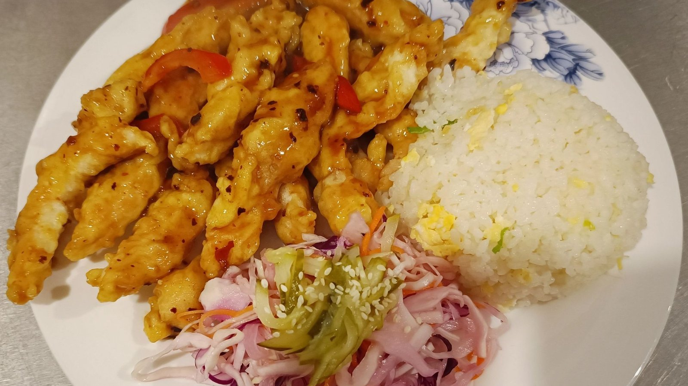
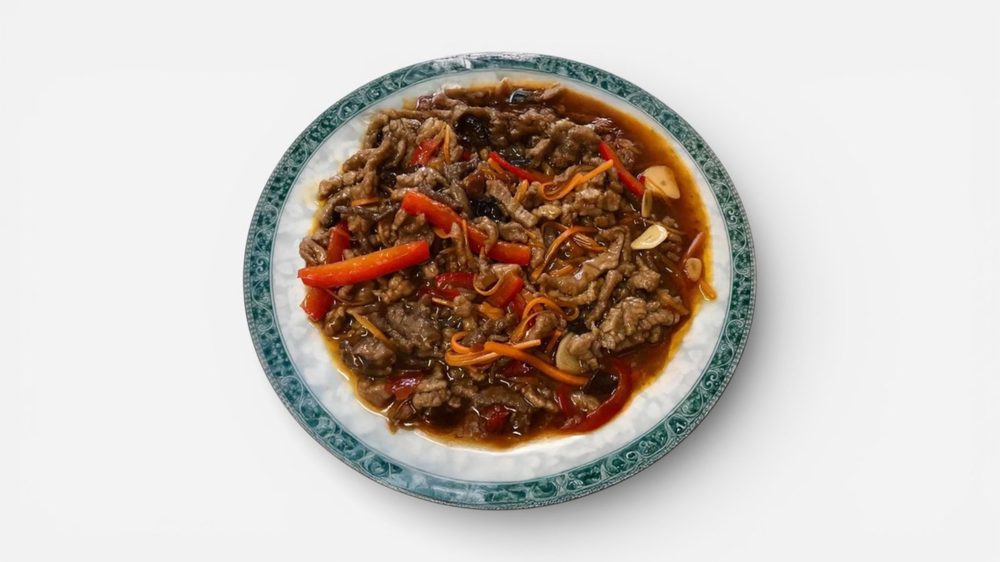
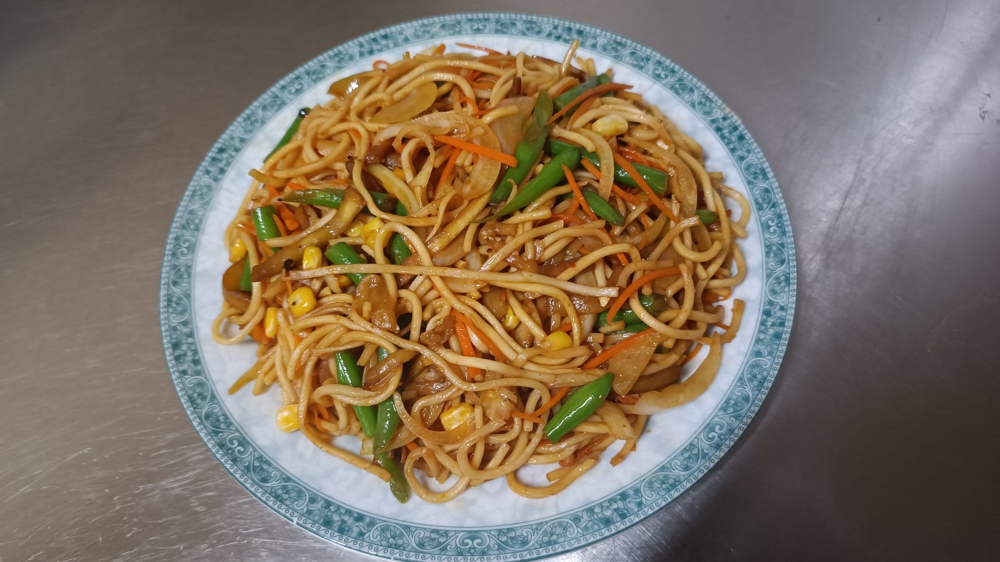
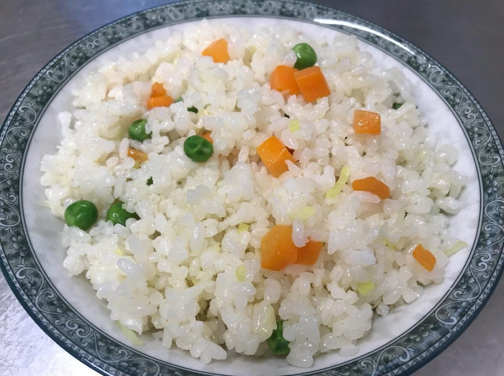

(DC): Vienartiniai įrankiai/刀叉. 1 vnt
Šakutė ir šaukštas

SUNYA / mūsų virtuvė
SUNYA Varnių gatvėje pristato tradicinę kinų virtuvę: nuo saldžiarūgštės vištienos iki „Gong Bao“ krevečių, jautienos su bambukų ūgliais ir keptų baklažanų. Meniu rasite ir švelnių, ir aštresnių derinių.
Vienas išskirtinių ingredientų – „Ya Tsai“, tradiciškai raugintos daržovės, naudojamos vištienos patiekale. „Dou Chi“ jautienai skonį suteikia fermentuotos juodosios pupelės, o „Mushu“ deriniuose susitinka kiaušiniai, daržovės ir kiniški grybai.

VIŠTIENA · RYŽIAI · MAKARONAI
Kompleksuose pagrindinis patiekalas derinamas su keptais ryžiais ir kiaušiniu. Ieškantiems daržovių – baklažanų bei makaronų pasirinkimai. Meniu paieškoje lengvai rasite mėgstamą ingredientą.
Peržiūrėti patiekalus ↗Skonių pasirinkimas
Vištiena, jautiena, krevetės, daržovės, ryžiai ir makaronai. Dėl alergenų teiraukitės restorano.
Nerasta. Pabandykite kitą pavadinimą.
Šakutė ir šaukštas
Sūrus sojų padažas, naudojamas patiekalams gaminti.
Saldus sojų padažas, naudojamas patiekalams suteikti spalvos ir ryžiams su sojų padažu gaminti.
50 ml
Tradicinis kinų patiekalas ir šiuo metu populiarus patiekalas „Ya Tsai“ – tai tradiciniais metodais raugintos daržovės. Šios pikantiškos daržovės pasižymi ypatingu, puikiu skoniu. (vištienos šlaunelės, svogūnas, paprika, kukurūzai, žalieji žirneliai, “Ya Cai”) Kompleksas: 1. J-50 (JMYC): “Ya Tsai” vištiena. 2. Ryžiai su kiaušiniu 250g.
Įvairios daržovių sriubos su kiaušiniu arba be kiaušinio. 300ml
1. J-1(GBJ): Traški vištiena saldžiarūgščiame padaže. 2. F-15(DCF): Kepti ryžiai su kiaušiniu.
1. J-1(GBJ): Traški vištiena saldžiarūgščiame padaže. 2. F-15(DCF): Kepti ryžiai su kiaušiniu. Saldžiarūgštis padažas yra atskiras.
1. J-2(LSGBJ): Vištiena su pomidorų padažu. 2. F-15(DCF): Kepti ryžiai su kiaušiniu.
1. J-3(TCJD): Saldžiarūgštė vištiena su žaliais žirneliais ir morkomis. 2. F-15(DCF): Kepti ryžiai su kiaušiniu.
1. J-4(GBJD): Gongbao vištiena. 2. F-15(DCF): Kepti ryžiai su kiaušiniu.
1. J-5(LZJT): Vištiena aštriame padaže. 2. F-15(DCF): Kepti ryžiai su kiaušiniu.
1. J-6(TCJT): Vištienos juostelės pomidorų padaže. 2. F-15(DCF): Kepti ryžiai su kiaušiniu.
1. J-7(YTJ): Vištiena kaip vyšnia. 2. F-15(DCF): Kepti ryžiai su kiaušiniu.
1. J-7(YTJ): Vištiena kaip vyšnia. 2. F-15(DCF): Kepti ryžiai su kiaušiniu.
1. J-9(TLJK): Saldi ir aštri vištiena 2. F-15(DCF): Kepti ryžiai su kiaušiniu.
1. J-8(BLJK): Vištiena su ananasais. 2. F-15(DCF): Kepti ryžiai su kiaušiniu.
(jautienos kumpis, svogūnai, paprika, kmynai) 1. N-3(ZRNR): Jautiena su kmynais. 2. F-15(DCF): Kepti ryžiai su kiaušiniu. 250g
(jautienos kumpis, juodieji Kiniški grybai, paprika, morkos, česnakai, sojų padažas) Kompleksas: 1. N-4(YXNR): Jautiena žuvies pipirų padaže 2. ryžiai su kiaušiniu 250g.
(jautienos kumpis, bambuko ūglis, paprika, morkos, pobrai) Komplexas: 1. N-5(GBNRZS): "Gan Bian" jautiena su bambuko ūgliais. 2. ryžiai su kiaušiniu 250g.
(jautienos kumpis, svagunai, salierai, bulvės, žemės riešutų trupiniai) Komplesas: 1. N-7(GBNRQC)/2: "Gan Bian" jautiena su celerai (Aštrus *). 2. ryžiai su kiaušiniu 250g.
1. C-1(YXQT): Baklažanai su "žuvies pipirų" padaže. 2. F-15(DCF): Kepti ryžiai su kiaušiniu.
1. C-2(SQZ): Kepti baklažanai su sojų padažu 2. F-15(DCF): Kepti ryžiai su kiaušiniu.
1. J-1(GBJ): Traški vištiena saldžiarūgščiame padaže. 2. F-15(DCF): Kepti ryžiai su kiaušiniu. 3. Salotos: Kopūstai ir kitos daržovės.
1. J-1(GBJ): Traški vištiena saldžiarūgščiame padaže. 2. F-15(DCF): Kepti ryžiai su kiaušiniu. 3. Salotos: Kopūstai ir kitos daržovės. Saldžiarūgštis padažas yra atskiras.
1. J-2(LSGBJ): Vištiena su pomidorų padažu 2. F-15(DCF): Kepti ryžiai su kiaušiniu. 3. Salotos: Kopūstai ir kitos daržovės.
1. J-3(TCJD): Saldžiarūgštė vištiena su žaliais žirneliais ir morka. 2. F-15(DCF): Kepti ryžiai su kiaušiniu. Salotos: Kopūstai ir kitos daržovės.
1. J-4(GBJD): Gongbao vištiena. 2. F-15(DCF): Kepti ryžiai su kiaušiniu. 3. Salotos: Kopūstai ir kitos daržovės.
1. J-5(LZJT): Vištiena aštriame padaže. 2. F-15(DCF): Kepti ryžiai su kiaušiniu. 3. Salotos: Kopūstai ir kitos daržovės.
1. J-6(TCJT): Vištienos juostelės pomidorų padaže. 2. F-15(DCF): Kepti ryžiai su kiaušiniu. 3. Salotos: Kopūstai ir kitos daržovės.
1. J-7(YTJ): Vištiena kaip vyšnia. 2. F-15(DCF): Kepti ryžiai su kiaušiniu. 3. Salotos: Kopūstai ir kitos daržovės.
1. J-9 (TLJK): Saldi ir aštri vištiena 2. F-15(DCF): Kepti ryžiai su kiaušiniu. 3. Salotos: Kopūstai ir kitos daržovės.
1. J-8(BLJK): Vištiena su ananasais. 2. F-15(DCF): Kepti ryžiai su kiaušiniu. 3. Salotos: Kopūstai ir kitos daržovės.
1. C-6(TCQZ): Saldžiarūgščiai baklažanai. 2. F-15(DCF): Kepti ryžiai su kiaušiniu.
1. C-1(YXQT): Baklažanai su "žuvies pipirų" padaže. 2. F-15(DCF): Kepti ryžiai su kiaušiniu. 3. Salotos: Kopūstai ir kitos daržovės.
1. C-2(SQZ): Kepti baklažanai su sojų padažu 2. F-15(DCF): Kepti ryžiai su kiaušiniu. 3. Salotos: Kopūstai ir kitos daržovės.
1. C-6(TCQZ): Saldžiarūgščiai baklažanai. 2. F-15(DCF): Kepti ryžiai su kiaušiniu. 3. Salotos: Kopūstai ir kitos daržovės.
(kopūstai, juodieji kiniški grybai, morkos) Kompleksas: 1. (MEBC): Kopūstai su juodaisiais grybais. 2. F-15(DCF): Kepti ryžiai su kiaušiniu. 250g.
(cukinijos , juodieji kiniški grybai, morkos) Kompleksas: 1. C-13(SRXHL): Cukinijos su morkais ir juodaisiais grybais. 2. F-15(DCF): Kepti ryžiai su kiaušiniu. 250g.
(vištienos filė, bambuko ūgliai, shiitake grybai, Kiniški juodieji grybai, morkos) Kompleksas: 1. J-25(SDJP): Vištiena su bambuko ūgliais ir shiitake grybais 2. F-15(DCF): Kepti ryžiai su kiaušiniu. 250g
(vištienos filė, juodieji Kiniški grybai, svogūnai, morkos) Kompleksas: 1. J-17(HMEJP): Vištiena su kiniškais juodaisiais grybais. 2. F-15(DCF): Kepti ryžiai su kiaušiniu. 250g
(vištienos filė, bambuko ūgliai, shiitake grybai, salierai, paprika) Kompleksas: 1. J-28(ZXJS): Vištiena su bambuko ūgliais, grybais ir daržovėmis. 2. F-15(DCF): Kepti ryžiai su kiaušiniu 250g.
(vištienos šlaunelės, porai, paprika, krakmolas, čili pipirai) Kompleksas: 1. J-10 (LZJ): Sichuan Aštri vištiena **. 2. F-15(DCF): Kepti ryžiai su kiaušiniu. 250g
Kompleksas: J-14(GGJK): "Sausas puodas" vištiena (aštrus**). 2. F-15(DCF): Kepti ryžiai su kiaušiniu. 250g
(krevetės, svogūnai, krakmolas, čili pipirai) 1. H-1(JYXR): „Jiao Yan” traškios krevetės (aštrus**) 2. F-15(DCF): Kepti ryžiai su kiaušiniu. 250g
(krevetės, svogūnai, žalieji žirneliai, morkos, saldžiarūgštis padažas) Kompleksas: 1. H-2(TCXR): Krevetės saldžiarūgščiame padaže. 2. F-15(DCF): Kepti ryžiai su kiaušiniu. 250g
(krevetės, svogūnai, žalieji žirneliai, morkos, saldžiarūgštis padažas. Padažas atskirai) 1. H-2(TCXR) B: Krevetės saldžiarūgščiame padaže. (padažas atskirai) 2. F-15(DCF): Kepti ryžiai su kiaušiniu. 250g
(krevetės, svogūnai, žalieji žirneliai, morkos, saldžiarūgštis padažas) Aštrus* 1. H-2(TCXR) C: Krevetės saldžiarūgščiame padaže. Aštrus*. 2. F-15(DCF): Kepti ryžiai su kiaušiniu. 250g
(krevetės, svogūnai, žalieji žirneliai, morkos, pomidorų padažas) H-3(QZXR): Krevetės pomidorų padaže. 2. F-15(DCF): Kepti ryžiai su kiaušiniu. 250g
(krevetės, svogūnai, paprika, žemės riešutai trupiniai, čili pipirai) 1. H-5(XLXR): “Xiangla” krevetės. Aštrus** 2. F-15(DCF): Kepti ryžiai su kiaušiniu. 250g
(krevetės, bambuko ūgliai, svogūnai, salierai, Siang Gu grybai) 1. H-6(ZSXR): Krevetės su bambuko ūgliais. 2. F-15(DCF): Kepti ryžiai su kiaušiniu. 250g
(krevetės, kiaušinis, agurkai, juodieji Kiniški grybai, morkos) 1. H-7(MXXR): „Mushu” krevetės. 2. F-15(DCF): Kepti ryžiai su kiaušiniu. 250g
(krevetės, agurkai, morkos, žemės riešutai) 1. H-8(GBXR): „Gong Bao” krevetės 2. F-15(DCF): Kepti ryžiai su kiaušiniu. 250g
(krevetės, cukinijos, juodieji Kiniški grybai, morkos) 1. H-9(XRXHL): Krevetės su cukinijomis. 2. F-15(DCF): Kepti ryžiai su kiaušiniu. 250g
(makaronai, vištienos filė, kopūstai, svogūnai, morkos, kukurūzai)
(makaronai, vištiena, kiaušinis, svogūnai, kopustai, morkos, žalieji žirneliai)
(makaronai, jautienos kumpis, kopustai, svogūnai, paprika, Shiitake grybai, kmynai) Dvigubas jautienos gabalėlių kiekis./Double amount of beef pieces.
(makaronai, vištienos filė, salierai, svogūnai, paprika, juodieji kiniški grybai, kmynai)
(makaronai, krevetės, vištienos filė, kopūstai, svogūnai, paprika, morkos, juodieji kiniški grybai)
(makaronai, ankštinės pupelės, baklažanai, svogūnai, kopūstai, morkos, paprika, kukurūzai)
(makaronai, kiaušinis, kopūstai, svogūnai, morkos, žalieji žirneliai)
(makaronai, kiauliena, ankštinės pupelės, svogūnai, paprika, morkos)
(makaronai, kiauliena, baklažanai, bambuko ūgliai, svogūnai, morkos, paprika)
(makaronai, kiauliena, bambuko ūgliai, salierai, morkos, kukurūzai)
(makaronai, krevetės, vištienos filė, salierai, svogūnai, bulvės, žemės riešutai/kukurūzai)
(makaronai, jautienos kumpis, kopustai, svogūnai, paprika, Shiitake grybai, kmynai)
(makaronai, vištiena, bambuko ūgliai, svogūnai, Xianggu grybai, morkos, žalieji žirneliai)
(makaronai, kiaušinis, agurkai, juodieji Kiniški grybai, bambuko ūgliais, morkos)
(ryžiai) 230g.
(ryžiai, kiaušinis) 250g.
(ryžiai, kiaušinis, sojų padažas) 250g.
Ryžiai, kiaušinis, poras, žalieji žirneliai, morkos. 250g.
Ryžiai, kiaušinis, poras , žalieji žirneliai, morkos, sojų padažas. 250g.
Patiekiama su pomidorų padažų, 200 g
Miltai, daržovės
Kalmarų žiedai tešloje. Pomidorų padažas.
Skirtingi prekių ženklai.
(jautienos kumpis, saldžioji paprika, morkos, juodieji kiniški grybai, sojų padažas) Komplekas: + ryžiai su kiausiniu 250g
(jautienos kumpis, bambuko ūglis, svogūnai, morkos, porai, čili pipirai) Komplekas: + ryžiai su kiausiniu 250g
(jautienos kumpis, svogūnai, salierai, bulvės, “Xiang Gu” grybai, žemės riešutų trupiniai, čili pipirai) Komplekas: + ryžiai su kiausiniu 250g
(jautienos kumpis, svogūnai, paprika, morkos, fermentuotos juodosios pupelės/Dou Chi ) Komplexksas: + ryžiai su kiausiniu 250g
(jautienos kumpis, bambuko ūglis, svogūnai, paprika, “Xiang Gu” grybai, “Suan Tsai”) Komplexksas: + ryžiai su kiausiniu 250g
Jautienos kumpis, svogūnai, paprika, kmynai.
(jautienos kumpis, salieras, pekino kopūstas, česnakai, čili pipirai, Sichuan peppercorns, sezamai) Komplekas: + ryžiai su kiausiniu 250g
Kalmarų žiedai tešloje su žolelėmis. Pomidorų padažas. 200g
SUNYA lėkštėje






Iki susitikimo
Dėl staliuko ir užsakymo išsinešti
susisiekite telefonu.